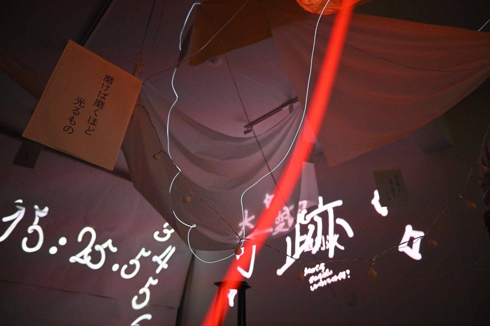
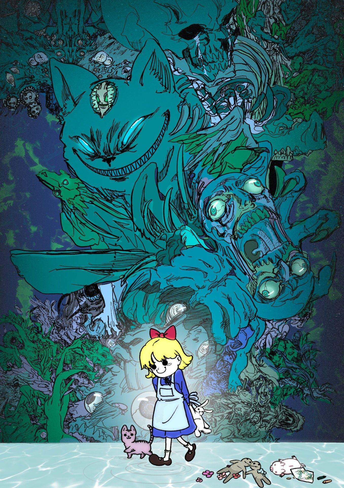
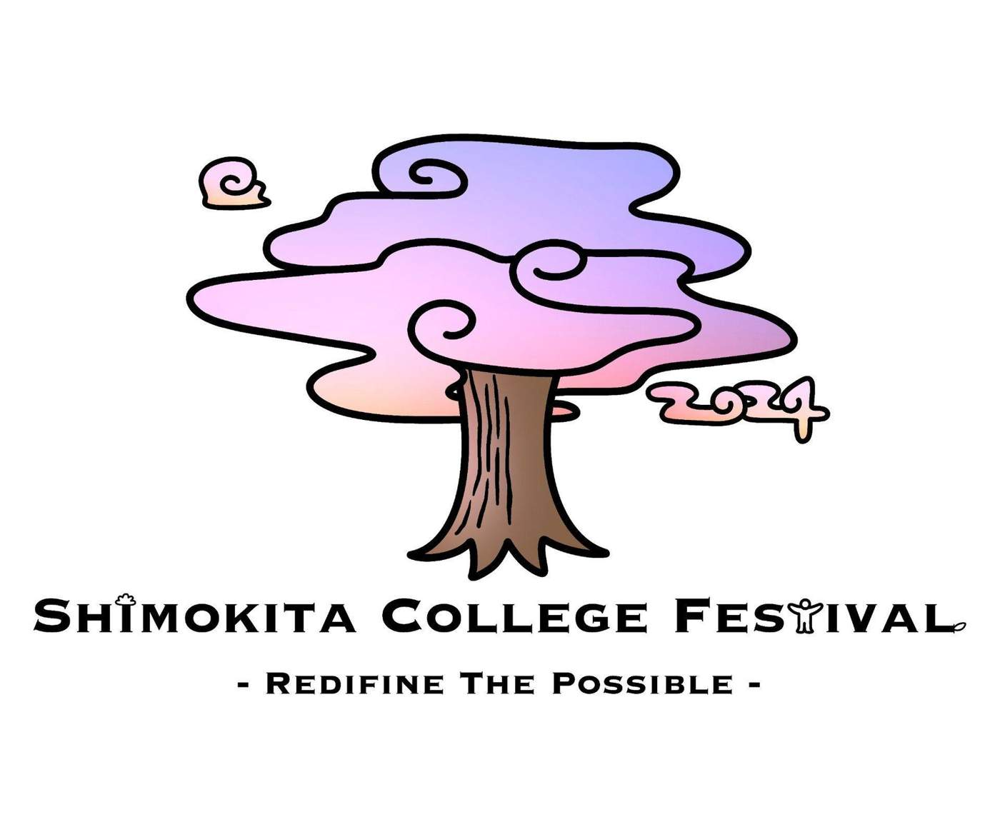
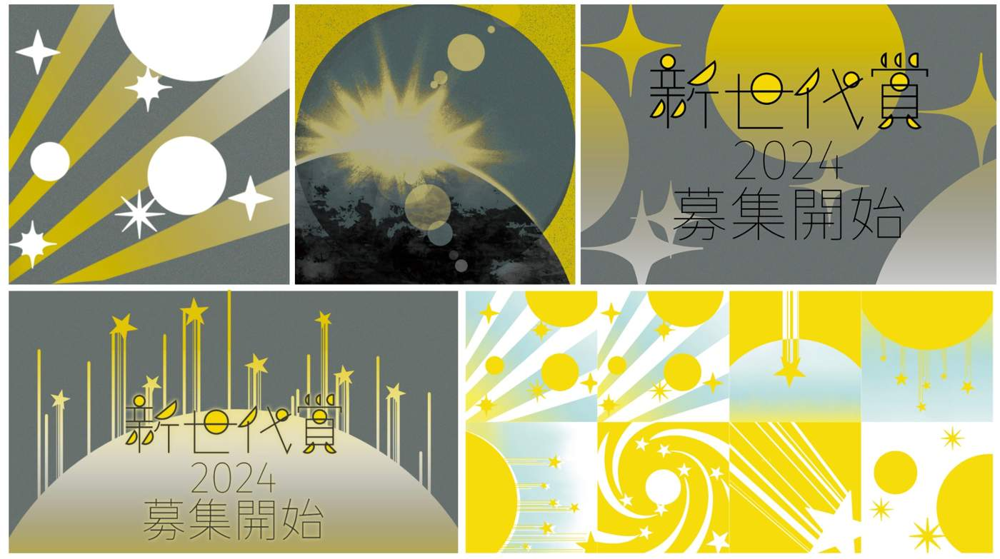
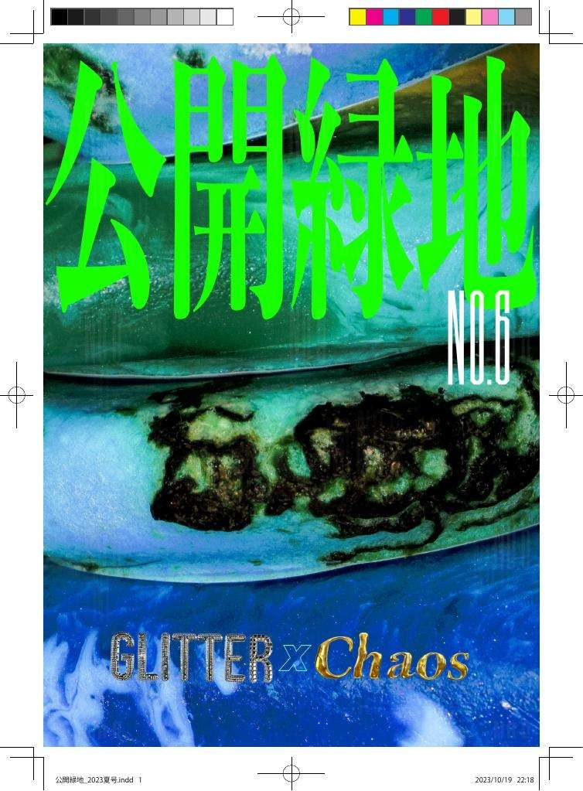
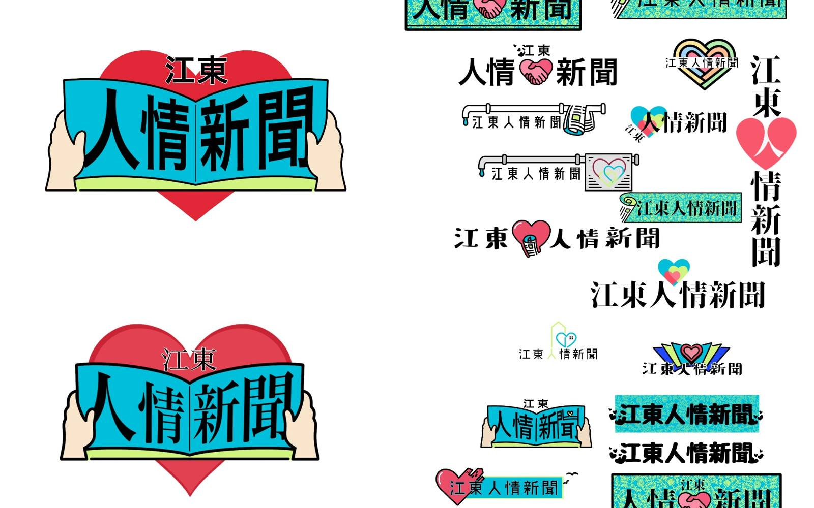
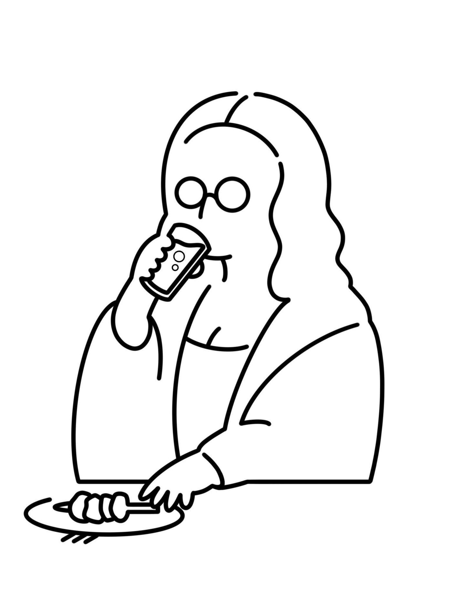

Design
Design
Selected identity, worldbuilding, and visual development projects.

College Festival Installation
Immersive, participatory installation exploring words, space, and communal reflection.

A Nightmare in Wonderland
Character concepts, worldbuilding, and visual development exploring a surreal and unsettling Wonderland.

College Festival Logos
Logo explorations, mark variations, final applications, and logo animation created for Shimokita College Festival.

Shin Sedai Award Promotion
Promotional visuals across social media and web, built as a unified visual system.

Koukairyokuchi
Editorial design, editing, and interviews for a collaborative magazine project.

人情新聞
Commissioned newspaper logo design developed through multiple proposals and practical variations.

モナリ座
Logo design project for モナリ座.